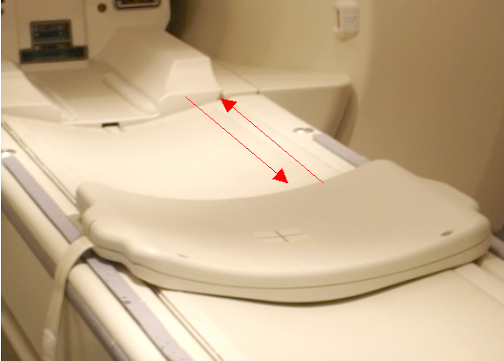
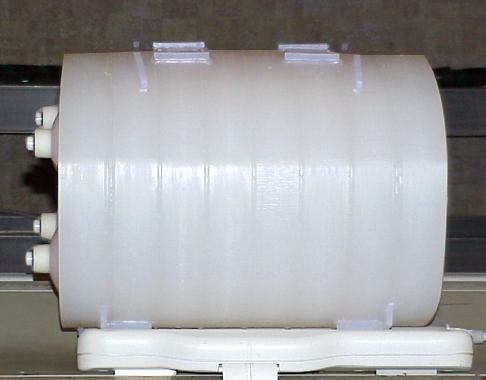
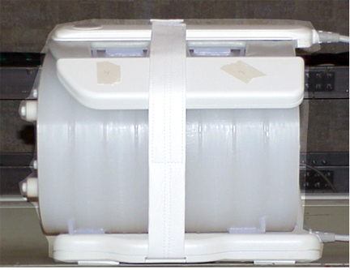
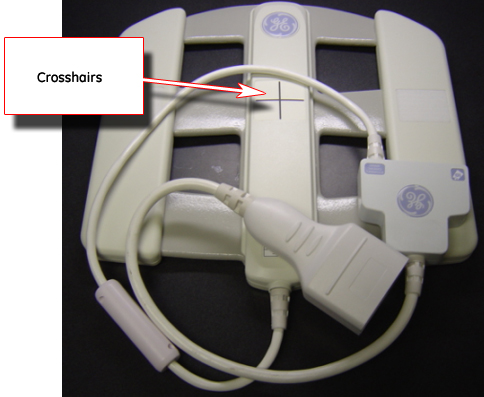
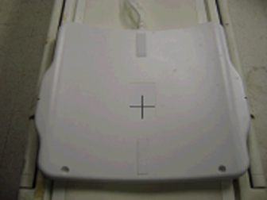
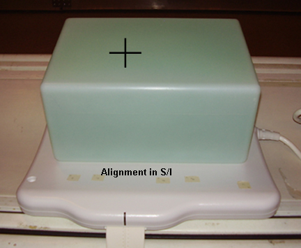
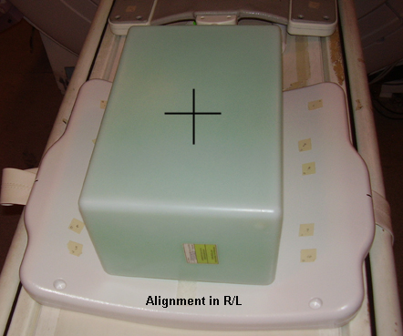
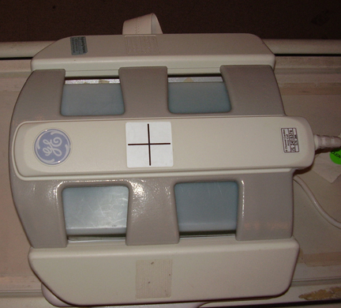
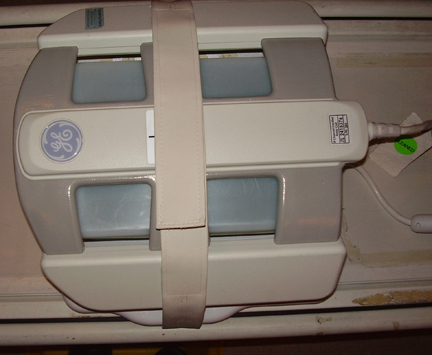
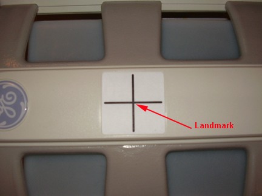

Operating Documentation
Direction 5440001-3, Rev# 6
Signa HDxt Service Methods
Module Version 6.0, Version Date 8/20/10
Operating Documentation |
| Required Persons | Preliminary Reqs | Procedure | Finalization |
|---|---|---|---|
| 1 | Not Applicable | 15 mins | Not Applicable |
This procedure prepares for the automated SNR test using the 1.5T HDx Cardiac Array by GE/USAI, catalog M3335MD.
| NOTE: | Coils do not ship with phantoms. Phantoms come in a unified phantom set with the MR system. |
| Item | Qty | Effectivity | Part# | Manufacturer | |
|---|---|---|---|---|---|
| Legacy Phantom Kit | 1 | Legacy Phantom Set | 2304255-3 | - | |
| TL Unified Phantom Set | 1 | Unified Phantom Set | 5343347 | - | |
| Condition | Reference | Effectivity |
|---|---|---|
For HDx, HDxt and HDe, the following coil configuration names must be installed to run this tool: HDx CardiacServ. | - | - |
For Discovery MR450 and Optima MR450w, the following coil configuration names must be installed to run this tool: GE_HDx 8Cardiac. | - | - |
| NOTE: | If installing the coil for the first time in the system, refer to Auto Coil Installation. |
Place the Posterior Coil on the table as shown, using the long patient pad between the table end and the posterior coil.
Illustration 1: Placement of Posterior Coil

Place the Phantom onto the posterior coil, then guide the phantom into position by lining up the locator pins on the phantom with the locator holes in coil as shown below.
Illustration 2: Phantom Positioned on Posterior Coil

Place the Anterior Coil on top of the phantom, and use the patient straps to secure in place as shown.
Illustration 3: Anterior Coil Positioned on Phantom

Landmark by aligning the laser light with the coil crosshairs as shown below.
Illustration 4: Landmarking with Crosshairs on Anterior Coil

Proceed to the Multi-Coil Quality Assurance Tool to test the coil.
Place the posterior section of the coil on the table as shown.
Illustration 5: Posterior Section of Coil on Table

Place the TL Unified Phantoms over the posterior section so the phantom set is well centered in the S/I and R/L directions as shown in both illustrations below.
Illustration 6: Phantom Set Centered in S/I Direction

Illustration 7: Phantom Set Centered in R/L Direction

Place the anterior section onto the phantom set so the coil is well centered in both S/I and R/L directions as shown.
Illustration 8: Coil Centered in Both S/I and R/L Directions

Fasten the Velcro® straps to firmly snug the coil to the phantom as shown below.
Illustration 9: Placement of Velcro Straps

Connect the coil to Port A of the system's LPCA.
Landmark the coil at the crosshairs as shown below, and [Advance to Scan].
Illustration 10: Landmarking on Coil Crosshairs

Proceed to the Multi-Coil Quality Assurance Tool to test the coil.
No finalization steps.